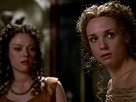

О сериале
- Жанр
Историческая драма - Сезонов
2 - Длительность серии
50 минут - На экранах
С 23 августа 2005 по 25 марта 2007
Старший брат «Игры престолов». Именно «Рим» в свое время проложил дорогу масштабным и дорогостоящим тв-проектам. 50 лет до новой эры. Легендарная эпоха Юлия Цезаря, заката республики и рождения империи. Сьемки проходили в Италии, где построили несколько кварталов Вечного Города в натуральную величину. На воссоздание достоверных деталей римского быта потрачены десятки миллионов долларов. «Рим» — это первый случай, когда древние римляне на экране не похожи на ряженых в картонных шлемах. Но главное здесь не декорации и костюмы, а динамичный сюжет и психологическая достоверность характеров.
Every City
Has its Secrets.
Has its Secrets.
 Посмотреть трейлер сериала
Посмотреть трейлер сериала- 1 Сезон
- 2 Сезон
01
02
03
04
05
06
07
08
09
10
11
12
01
02
03

04
05
06
07
08
09
10
Главные герои